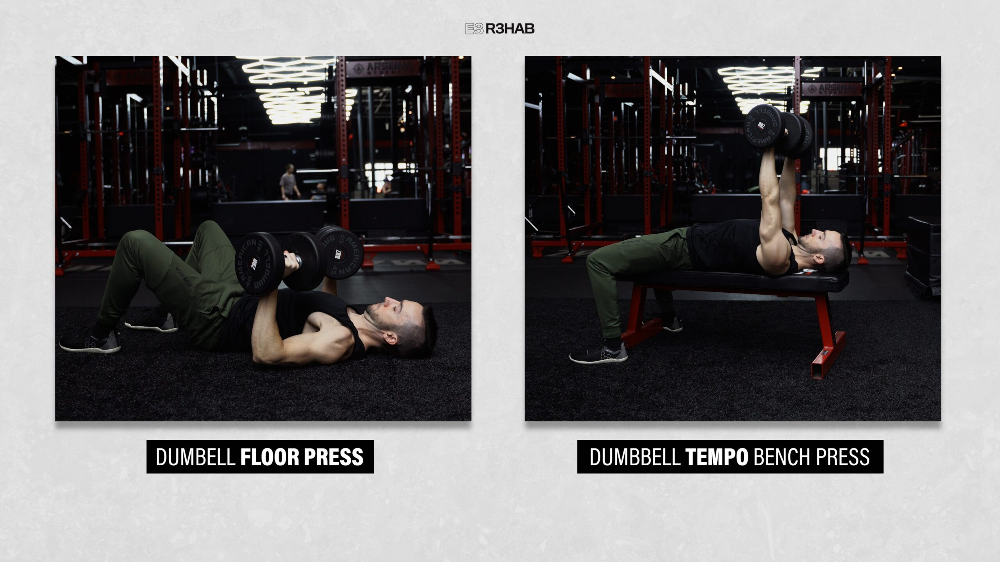
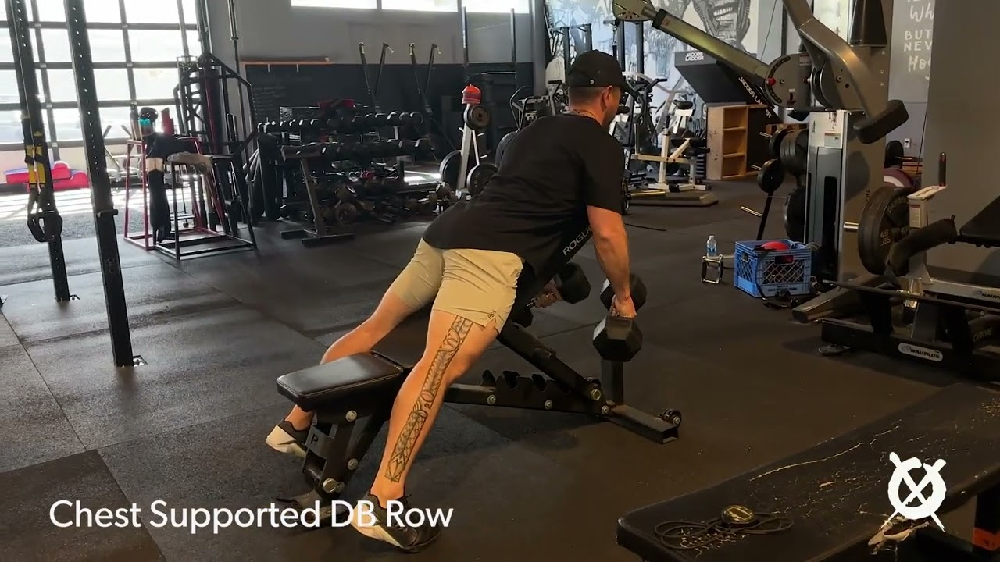
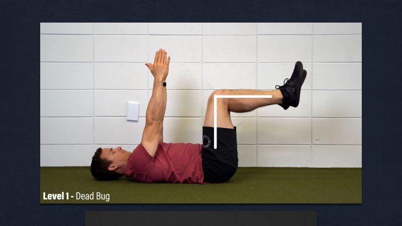
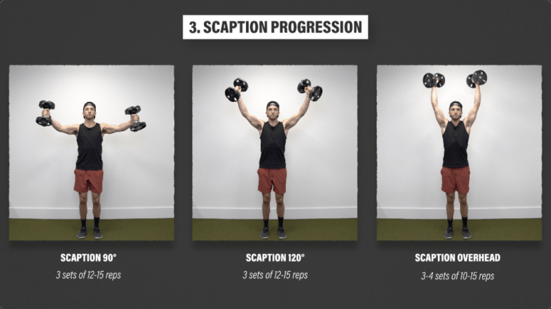
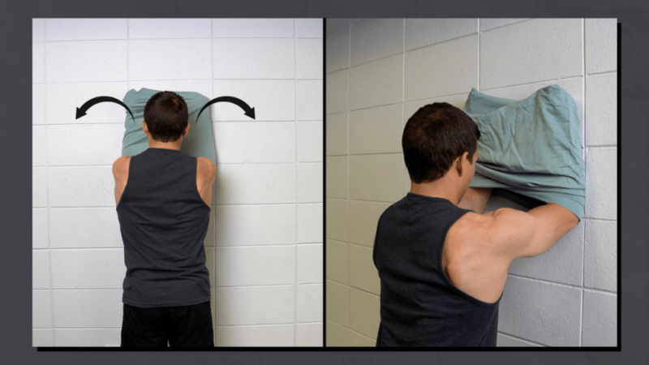

Your complete session
Upper A
Follow the sequence at your own pace. Choose manageable loads and comfortable ranges; leave the prescribed good repetitions in reserve.
Warm up
Easy bike or walk
2 minutes, easy

Keep this conversational and easy; adjust the bike to your comfort. Photo: Hospital for Special Surgery ↗ - Move easily enough to talk normally.
Keep this easy. Stop a movement that produces pain, catching, apprehension or loss of control; do not force end range.
Active wrist flexion and extension
1 × 8 full cycles, both wrists together

Gently bend and straighten the wrist. Add slow palm-up/palm-down cycles for the home option. Photo: E3 Rehab ↗ - Support forearms; move both wrists gently up and down.
Keep this easy. Stop a movement that produces pain, catching, apprehension or loss of control; do not force end range.
Open and close hands
1 × 10, both hands together
Open and close gently; keep the wrist comfortable. Photo: E3 Rehab ↗ - Open and close gently; do not squeeze maximally.
Keep this easy. Stop a movement that produces pain, catching, apprehension or loss of control; do not force end range.
Comfortable active shoulder elevation
1 × 8, both arms together

Raise only through your comfortable arc; reaching the photographed endpoint is not required. Photo: E3 Rehab ↗ - Raise arms in a comfortable direction; stop before a painful catch.
Keep this easy. Stop a movement that produces pain, catching, apprehension or loss of control; do not force end range.
Easy bilateral band external rotation
1 × 10, both arms together; very light

Keep elbows near the ribs and use very light tension. Photo: E3 Rehab ↗ - Elbows near the sides; rotate both forearms outward together.
- Do not twist the trunk or chase band tension.
Keep this easy. Stop a movement that produces pain, catching, apprehension or loss of control; do not force end range.
Move to first lift
1 minute transition allowance
- Set up the first exercise; this is not another working set.
Keep this easy. Stop a movement that produces pain, catching, apprehension or loss of control; do not force end range.
Strength & targeted rehab
Dumbbell bench press
Strength · bilateral simultaneous; both arms together
Rest: 150 seconds between sets.
Light rehearsal sets first:
- 8 reps; rest 45 seconds afterward.
- 5 reps; rest 60 seconds afterward.
- 3 reps; rest 90 seconds afterward.
3 × 8–10 · 2–3 good reps left

Flat bench press. Choose a comfortable grip and depth. Photo: E3 Rehab ↗ - Press both arms together with wrists stacked over elbows.
- Lower only through a comfortable, controlled range.
- Use lighter weights or the floor/machine swap if the setup provokes symptoms.
Stop the provoking set for painful catching, slipping/giving way, or meaningful loss of normal arm function. Do not test through it; recurring or substantial features warrant qualified assessment before progressing the provoking movement.
Chest-supported dumbbell row
Strength · bilateral simultaneous; both arms together
Rest: 150 seconds between sets.
Light rehearsal sets first:
- 6 reps; rest 60 seconds afterward.
- 3 reps; rest 90 seconds afterward.
3 × 8–10 · 2–3 good reps left

Keep the chest supported while rowing both dumbbells. Photo: Off The Leash Lifestyle ↗ - Rest chest on the incline bench and row both dumbbells together.
- Let shoulder blades move; stop without driving elbows far behind the trunk.
Stop the provoking set for painful catching, slipping/giving way, or meaningful loss of normal arm function. Do not test through it; recurring or substantial features warrant qualified assessment before progressing the provoking movement.
Dead bug
Strength · alternating repetitions within same exercise
Rest: 60 seconds after both sides.
3 × 6–8 each side · 2–3 good reps left

Move one heel at a time; use the shorter reach when prescribed. Photo: E3 Rehab ↗ - Lie on your back and slowly reach one bent leg away at a time.
- Keep arms comfortable; stop the reach before the back loses control.
Stop for new or increasing joint/tendon-region pain, loss of control or altered everyday function. Repeat the last tolerable dose or reduce it; persistent or substantial recurrence warrants assessment.
Dumbbell scaption
Rehab · bilateral simultaneous; both arms together
Rest: 90 seconds between sets.
2 × 10–15 · 2–4 good reps left

Lift only through your comfortable arc. Photo: E3 Rehab ↗ - Raise both arms between straight ahead and sideways, with thumbs generally up.
- Start with a comfortable shoulder-height or lower arc; no painful catch.
Stop the provoking set for painful catching, slipping/giving way, or meaningful loss of normal arm function. Do not test through it; recurring or substantial features warrant qualified assessment before progressing the provoking movement.
Cable external rotation, elbow near side
Rehab · unilateral; both sides
Rest: 30 seconds to rest and switch sides; 90 seconds after both sides.
2 × 10–15 each side · 2–4 good reps left

Same rotation pattern; use a cable at elbow height and support the elbow if needed. Photo: E3 Rehab ↗ - Keep elbow near your side; rotate forearm outward against the cable.
- Support with a towel if useful; do not turn the trunk.
Stop the provoking set for painful catching, slipping/giving way, or meaningful loss of normal arm function. Do not test through it; recurring or substantial features warrant qualified assessment before progressing the provoking movement.
Cable triceps pressdown
Rehab · bilateral simultaneous; both arms together
Rest: 90 seconds between sets.
2 × 8–12 · 2–3 good reps left

Keep upper arms near your sides and straighten the elbows. Photo: E3 Rehab ↗ - Keep upper arms near the sides and press the handle down with both arms.
- Extend smoothly without snapping the elbows.
Stop for new or increasing joint/tendon-region pain, loss of control or altered everyday function. Repeat the last tolerable dose or reduce it; persistent or substantial recurrence warrants assessment.
Supported dumbbell wrist extension
Rehab · bilateral simultaneous; both arms together
Rest: 60 seconds between sets.
2 × 10–15 · 2–4 good reps left

Support the forearm; lift the back of the hand. Photo: E3 Rehab ↗ - Forearms supported.
- Both wrists move together through a comfortable arc.
Stop for new or increasing joint/tendon-region pain, loss of control or altered everyday function. Repeat the last tolerable dose or reduce it; persistent or substantial recurrence warrants assessment.
Resisted radial deviation
Rehab · unilateral; both sides
Rest: 30 seconds to rest and switch sides.
1 × 10–15 each side · 2–4 good reps left

Lift toward the thumb side using a short lever. Photo: E3 Rehab ↗ - Support the forearm with thumb upward.
- Use a short light lever; move toward the thumb side.
Stop for new or increasing joint/tendon-region pain, loss of control or altered everyday function. Repeat the last tolerable dose or reduce it; persistent or substantial recurrence warrants assessment.
Forearm wall slide
Rehab · bilateral simultaneous; both arms together
Rest: 60 seconds between sets.
2 × 8–12 · 2–4 good reps left

Slide up within a comfortable range while maintaining forearm contact. Photo: E3 Rehab ↗ - Keep forearms on the wall and gently push it away.
- Slide only as high as comfortable without forcing your back to arch.
- Let the shoulder blades move naturally as the arms slide.
Stop the provoking set for painful catching, slipping/giving way, or meaningful loss of normal arm function. Do not test through it; recurring or substantial features warrant qualified assessment before progressing the provoking movement.
Mobility
Supported shoulder flexion
2 × 8, both arms together

Use forearm support if wrists prefer it and move only as far as comfortable. Photo: E3 Rehab ↗ - Rest forearms on support and gently move torso back.
- Keep range comfortable; no forced overhead stretch.
Keep this easy. Stop a movement that produces pain, catching, apprehension or loss of control; do not force end range.
Gentle wrist flexion-extension movement
2 × 30 seconds per wrist; active movement, not a hold
Gently bend and straighten the wrist. Add slow palm-up/palm-down cycles for the home option. Photo: E3 Rehab ↗ - Move the wrist gently through a comfortable arc for the whole bout.
- Do not use the other hand to force a stretch.
Keep this easy. Stop a movement that produces pain, catching, apprehension or loss of control; do not force end range.
Use the interactive copy for swaps and temporary adjustments. No workout history is recorded.